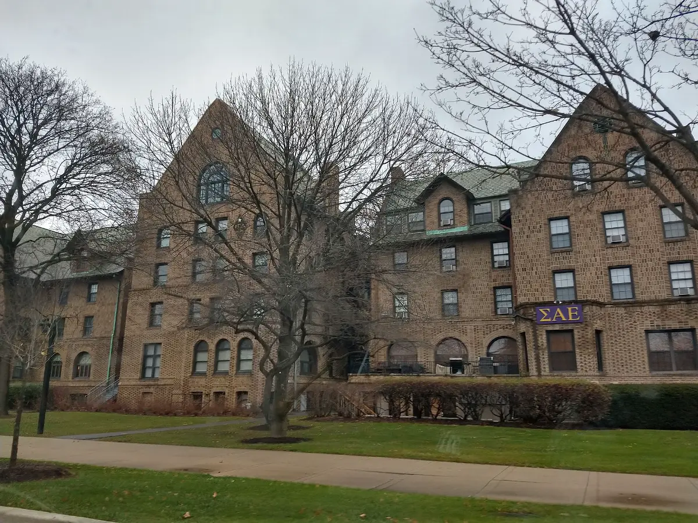

Northwestern University
Evanston, IL · Midwest
Common App memberTest-optional
Photo: “Northwestern University Evanston” by Edudellapiazza, CC BY-SA 4.0 · CC BY-SA 4.0 · Wikimedia Commons · Image credits
Data checked on
Data checked on . Цикл подачи указан у каждого значения. Если официальная страница его не называет, мы так и пишем, а не гадаем.
Подтверждено на странице вуза на commonapp.org (членство 2026). Заявка подаётся через Common App. commonapp.org
- Deadlines Verified
-
- QuestBridgeOctober 1, 2026
- Early Decision (binding)November 1, 2026
- Regular DecisionJanuary 4, 2027
Даты указаны с годом. Срок подачи анкет на финансовую помощь: 1 декабря 2026 для Early Decision и 1 февраля 2027 для Regular Decision. Решения по ED приходят в декабре 2026, по RD в марте 2027.
- Standardized tests Verified
-
Test-optional: SAT or ACT not required for first-year applicants
Баллы можно приложить по желанию, также можно отправить AP или IB. Баллы из октябрьских и ноябрьских тестов для ED можно указать самостоятельно до 30 ноября 2026, декабрьские для RD до 15 февраля 2027. Зачисленные студенты, подавшие баллы, присылают официальные.
- English proficiency Verified
-
Required if your first language is not English or your secondary schooling was not in English: TOEFL iBT, IELTS (incl. Indicator) or Duolingo; no minimum score
Минимального балла нет, но конкурентные абитуриенты показывают высокие результаты по всем частям. Баллы нельзя указывать самостоятельно: они отправляются официально из тестирующей организации. Superscore и TOEFL MyBest Scores не рассматриваются.
- Essays & supplements Verified
-
Writing supplement: one required answer (300 words or fewer) and one or two more from a choice (under 200 words each); the Common App personal essay is no longer required
Northwestern прямо пишет, что личное эссе Common App больше не требуется. Эссе, написанные для других вузов, можно использовать повторно, если они рассказывают нужную вам историю.
- For international applicants Verified
-
Certified English translations of foreign transcripts are required; interviews via InitialView are optional
Можно воспользоваться любым сервисом перевода, в том числе в своей стране. Собеседование необязательно, его отсутствие не считается недостатком.
- Financial aid for internationals Verified
-
International candidates seeking aid are evaluated need-aware: the request for aid is considered by the admission committee and the process is more competitive
Это значит, что просьба о помощи учитывается при решении о зачислении, а конкурс выше. Просить о помощи нужно сразу в основной заявке, поставив «yes» в поле о финансовой помощи.
- Aid forms Verified
-
CSS Profile (code 1565) plus parents' tax forms or an employer income letter; ISAFA if the Profile cannot be submitted
Иностранным студентам фонд College Board не даёт освобождения от оплаты Profile. Если подать Profile из вашей страны нельзя или это создаёт серьёзные трудности семье, заполняется International Student Application for Financial Assistance (ISAFA).
Plan your application
Попробуйте демо-подачу, чтобы увидеть, где в Common App встречается каждое из этих требований.